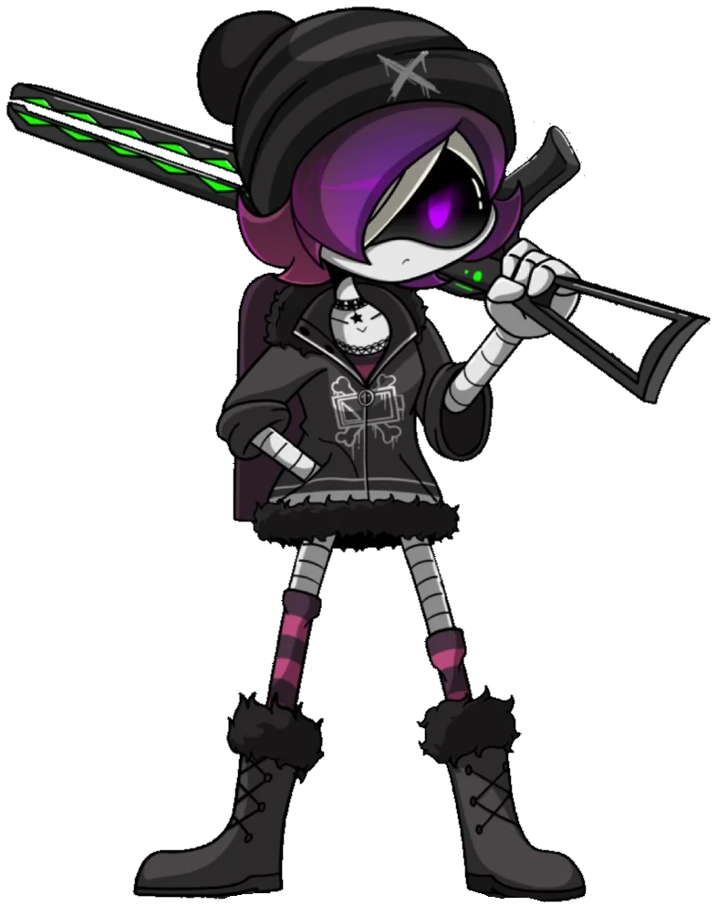
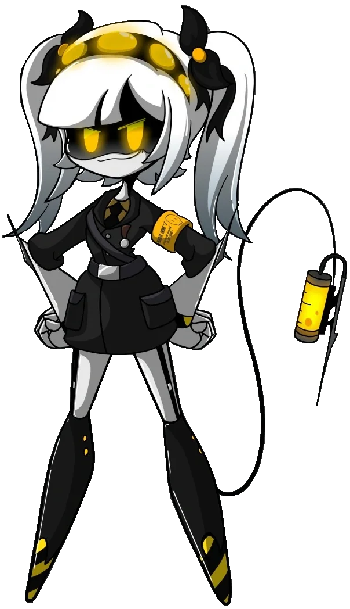

J
La Designación de Serie J (o simplemente J) es uno de los personajes antagonistas secundarios en la serie Murder Drones (Drones Asesinos) de Glitch Productions. Se caracteriza por ser una dron de desmontaje altamente dedicada a su misión, actuando como la líder del escuadrón compuesto por ella, N y V.